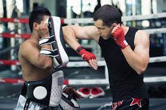

MUAY THAI IS THE ULTIMATE STRIKING ART
- Kicks
- Knees
- Punches
- Elbows
- What else could you want?
Kicks are the most powerful of the striking techniques
The coiling and swinging of the hips allows for huge amounts of force to be generated. Many pros kicks power
are equalivalent to getting hit by a car traveling at 45 mph
- Round House Kicks
- Axe Kicks
- Teaps
- Side Kicks, etc
Knees are match ending
They have the ability to put all the force in a very small point like elbows and will focus the force
resulting in often times match ending blows
- Rear leg jumping knee
- Scissor jumping knee
- Flying knee
Punches are by far the most used strike
They have the ability to keep distance and close distance from many different angles at once. It is crucial
to become a good puncher before trying to master other aspects of Muay Thai
- Jab
- Cross
- Uppercut
- Hook
- Backfist
Elbows are lethal because it has the smallest point of contact
so all the force gets hyper focussed and will cut like a blade
- Uppercut elbow
- Spinning elbow
- Horizontal elbow
